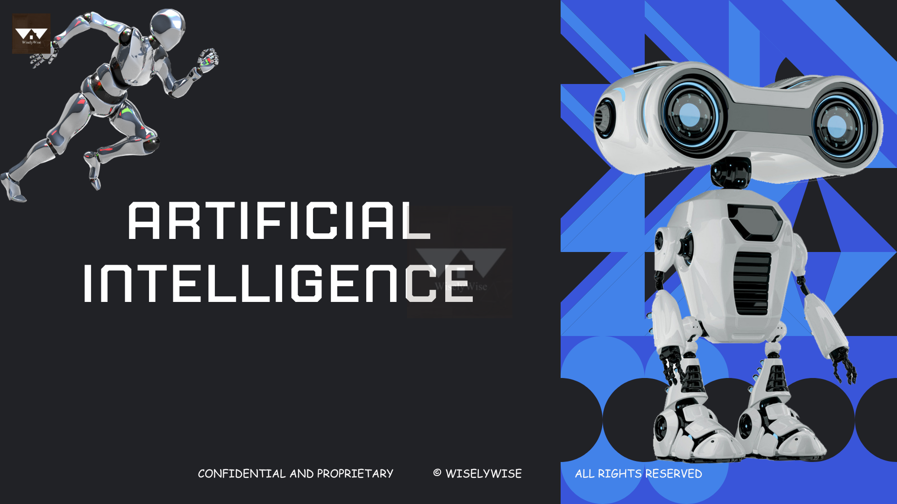
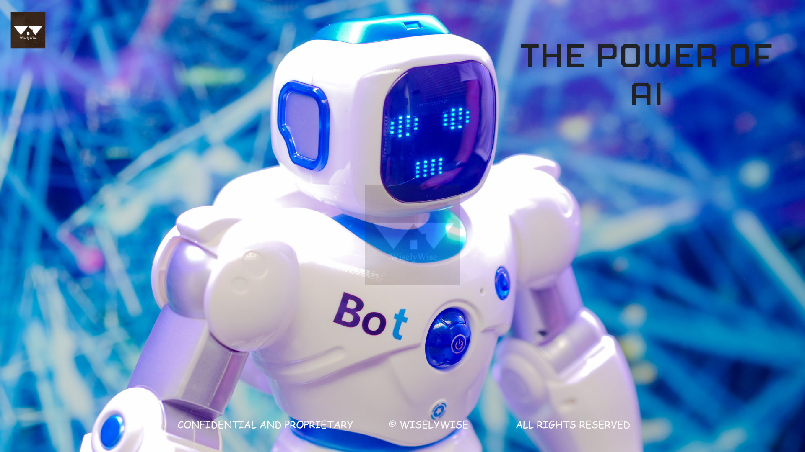
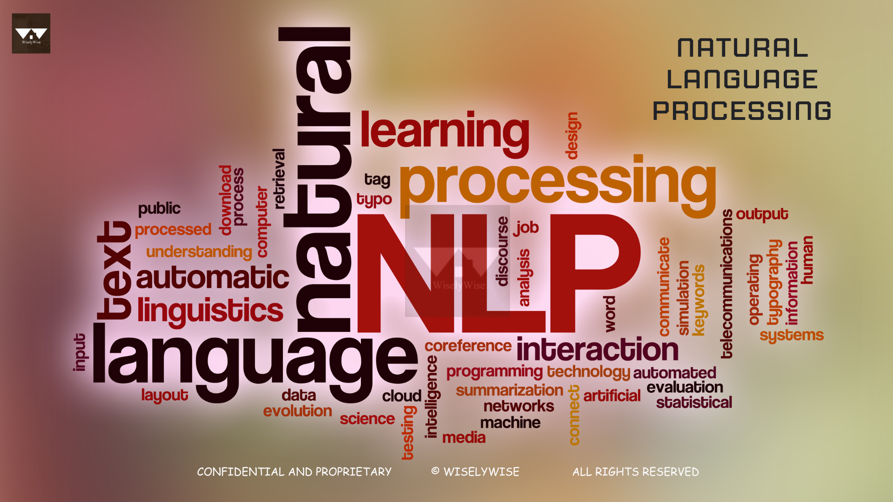
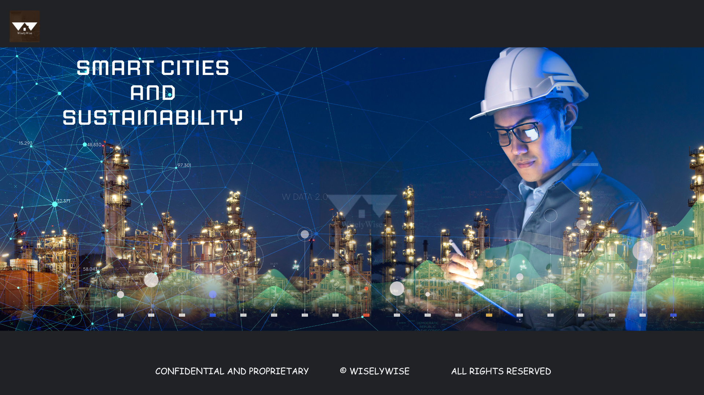
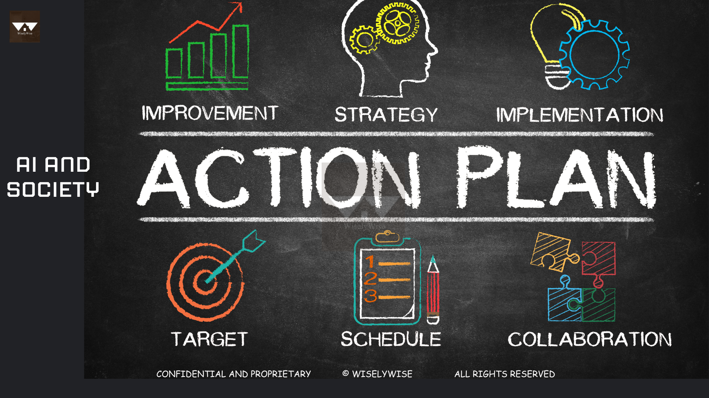
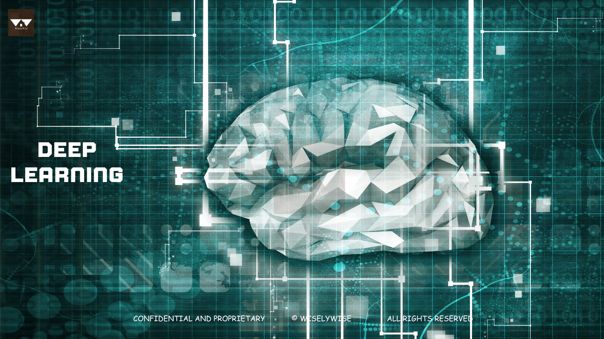

AI Master Textbook - For Grades 9-12
Welcome to AI Master, an advanced course designed to take your understanding and skills in artificial intelligence to the next level. In this comprehensive handbook, we will delve into the intricacies of AI, explore cutting-edge applications, and empower you to become a master in this transformative field. Get ready to unlock the potential of AI and embark on an exciting journey of exploration, innovation, and mastery.
Artificial Intelligence
Artificial Intelligence (AI) refers to the simulation of human intelligence in machines, enabling them to perform tasks that typically require human intelligence, such as learning, reasoning, problem-solving, and decision-making. AI aims to create intelligent systems that can perceive their environment, understand natural language, interpret and analyze data, and make informed judgments or predictions. It encompasses various subfields, including machine learning, natural language processing, computer vision, and robotics. AI seeks to replicate and extend human cognitive abilities, enabling machines to process and comprehend complex information, adapt to new situations, and interact with humans in a more natural and intuitive manner. The ultimate goal of AI is to develop systems that can exhibit intelligence, learn from experience, and continuously improve their performance, leading to advancements in technology, automation, and problem-solving capabilities. 
The Power of AI:
Before we delve into the advanced concepts and applications of AI, let's take a moment to recognize the immense power and impact of this revolutionary technology.
AI and its Power
Artificial Intelligence (AI) has emerged as a game-changer across industries and disciplines, redefining the way we work, live, and interact with the world. From healthcare and finance to robotics and automation, AI is revolutionizing processes, enhancing decision-making, and driving innovation at an unprecedented pace.
Imagine a world where AI-powered systems analyze complex medical data, enabling early disease detection and personalized treatments. Envision self-driving cars navigating our roads, reducing accidents, and transforming transportation. Picture virtual assistants that understand natural language and perform tasks with remarkable efficiency. These are just a few examples of how AI is transforming our lives and shaping the future.
AI is not just about technology; it's about harnessing data-driven insights, solving complex problems, and unlocking new possibilities. By leveraging machine learning, deep learning, and other AI techniques, we can extract valuable knowledge from vast datasets, automate processes, and make informed decisions that drive success.
Moreover, AI is pushing the boundaries of human potential, augmenting our capabilities, and opening doors to innovation. With AI, we can tackle grand challenges, such as climate change and sustainability, by leveraging intelligent systems and predictive analytics. AI empowers us to explore uncharted territories, create groundbreaking solutions, and shape a better future for humanity.

Natural Language Processing: Understanding and Interacting with Human Language
Natural Language Processing (NLP) is a branch of artificial intelligence that focuses on the interaction between computers and human language. NLP enables machines to understand, interpret, and generate human language, allowing for a wide range of applications such as chatbots, sentiment analysis, machine translation, question answering systems, and more. Here's an elaboration on the key aspects of NLP:
-
Text Classification: Text classification involves categorizing or assigning predefined labels to text documents based on their content. This task is essential for tasks like spam detection, sentiment analysis, topic classification, and intent recognition. Machine Learning algorithms, such as Naive Bayes, Support Vector Machines, and deep learning models like Convolutional Neural Networks (CNNs) and Recurrent Neural Networks (RNNs), are commonly used for text classification.
-
Sentiment Analysis: Sentiment analysis, also known as opinion mining, aims to determine the sentiment or emotional tone expressed in a piece of text. It involves classifying text as positive, negative, or neutral. Sentiment analysis has various applications, such as analyzing social media sentiment, customer reviews, brand reputation monitoring, and market research. Machine Learning techniques, including supervised learning algorithms and deep learning models like RNNs and Transformers, are often used for sentiment analysis.
-
Named Entity Recognition (NER): NER is the task of identifying and classifying named entities in text, such as names of people, organizations, locations, dates, and more. NER is crucial for information extraction, question answering systems, and text summarization. Machine Learning approaches, including rule-based methods, statistical models like Conditional Random Fields (CRFs), and deep learning models like Recurrent Neural Networks (RNNs) and Transformers, are commonly employed for NER.
-
Language Generation: Language generation involves generating human-like text that is coherent and contextually relevant. This includes tasks like machine translation, text summarization, chatbot responses, and dialogue generation. Techniques such as rule-based approaches, statistical models like Hidden Markov Models (HMMs), and advanced deep learning models like Transformers, including models like BERT (Bidirectional Encoder Representations from Transformers) and GPT (Generative Pre-trained Transformers), are used for language generation tasks.

Cutting - Edge AI Applications
Let's dive deeper into each of the cutting-edge AI applications and their implications:
Healthcare: Revolutionizing Diagnosis, Treatment, and Care
AI is transforming healthcare by leveraging its capabilities in medical imaging analysis, predictive analytics, and personalized medicine. With AI-powered systems, healthcare professionals can enhance early disease detection, optimize treatment plans, and improve patient outcomes. Medical imaging analysis using AI algorithms can aid in the detection and diagnosis of diseases from X-rays, MRIs, and CT scans, allowing for faster and more accurate interpretations. Predictive analytics can help identify high-risk patients and enable proactive interventions. Personalized medicine, driven by AI, takes into account individual patient characteristics and genetic information to tailor treatment plans for better efficacy.
However, implementing AI in healthcare comes with ethical considerations and challenges. Ensuring patient privacy and data security is of utmost importance when dealing with sensitive medical information. There is a need to address issues of bias in AI algorithms to ensure fair and equitable healthcare. Additionally, integrating AI systems into clinical workflows and gaining trust and acceptance from healthcare professionals require careful planning and collaboration.
Finance: Enhancing Decision-Making and Risk Management
AI is revolutionizing the finance industry by automating tasks, detecting fraudulent activities, and improving investment strategies. Through machine learning algorithms, AI can analyze vast amounts of financial data and generate insights for informed decision-making. AI applications in finance include algorithmic trading, where AI algorithms can analyze market trends and execute trades in real-time, and credit scoring, where AI models assess creditworthiness and determine risk levels. AI-powered customer service systems can provide personalized recommendations and streamline interactions with customers.
However, the use of AI in finance also raises ethical implications and potential risks. The reliance on AI-driven algorithms for critical financial decisions necessitates transparency and accountability. The potential for algorithmic biases and unintended consequences must be addressed to ensure fair and unbiased outcomes. Moreover, there is a need for robust regulatory frameworks to govern AI applications in finance and mitigate potential risks associated with algorithmic trading and financial decision-making.
Robotics and Automation: Enabling Intelligent Machines
AI is powering advancements in robotics and automation, enabling intelligent machines in various domains. Industrial automation benefits from AI techniques in areas such as robot perception, where AI algorithms enable robots to understand and interpret their environment, and motion planning, where AI algorithms help robots navigate complex spaces and perform tasks efficiently. Autonomous vehicles and drones rely on AI for perception, decision-making, and control systems, enabling them to operate safely and autonomously.
The widespread adoption of AI-driven automation raises questions about the societal impact and future of human-robot collaboration. While automation brings efficiency and productivity gains, it also raises concerns about job displacement and the need for reskilling and upskilling the workforce. Ensuring a smooth transition and equitable distribution of benefits require thoughtful planning and policy frameworks that prioritize human well-being and societal inclusivity.
Smart Cities and Sustainability
AI plays a crucial role in creating smart and sustainable cities by optimizing resource allocation, enhancing urban planning, and improving environmental monitoring. AI applications in energy management help optimize energy consumption and distribution, reducing waste and carbon footprint. Transportation systems benefit from AI-based traffic management and optimization, enabling efficient movement of vehicles and reducing congestion. Environmental monitoring using AI techniques allows for real-time analysis of air quality, water quality, and waste management, facilitating timely interventions for a cleaner and healthier environment.
While AI offers significant opportunities for building smart cities, ethical considerations and potential challenges must be addressed. Privacy concerns arise due to the vast amounts of data collected and processed in smart city infrastructures. There is a need for transparent and accountable data governance frameworks to protect individual privacy and ensure data security. Additionally, building sustainable and inclusive smart cities requires balancing economic development with social equity and environmental sustainability, with AI playing a supporting role in achieving these goals.

AI and Education: Transforming Learning Experiences
AI is transforming education by personalizing learning experiences, providing adaptive tutoring, and enabling intelligent assessment. Personalized learning platforms leverage AI algorithms to tailor educational content and adapt to individual student needs, promoting effective and engaging learning experiences. AI-powered tutoring systems can provide personalized feedback and guidance to students, enhancing their understanding and knowledge retention. Data-driven decision-making using AI analytics can help education institutions optimize resource allocation, identify areas for improvement, and enhance student outcomes.
However, integrating AI in education comes with challenges and opportunities. Ensuring data privacy and security is crucial when handling sensitive student information. Balancing the role of AI with human teachers and maintaining the human connection in the learning process is important for fostering meaningful interactions. Additionally, addressing issues of algorithmic biases and equitable access to AI technologies is necessary to prevent further educational inequalities and promote inclusive learning environments.
AI and Society: Opportunities and Challenges
The societal implications of AI encompass a wide range of areas, including privacy, bias, job displacement, and the digital divide. Privacy concerns arise due to the collection and analysis of massive amounts of personal data for AI applications. Ensuring data protection, informed consent, and transparency in data handling are essential for maintaining trust in AI systems. Addressing bias in AI algorithms is crucial to ensure fairness and prevent discriminatory outcomes. Ethical considerations, such as accountability and transparency, are necessary to build responsible AI systems that align with societal values.
Job displacement due to automation raises concerns about the impact on employment and the need for reskilling and upskilling the workforce. Bridging the digital divide is essential to ensure equitable access to AI technologies and prevent exacerbating existing inequalities. The responsible development and deployment of AI require collaboration among stakeholders, including policymakers, researchers, and industry experts, to address these challenges and maximize the benefits of AI for society.

AI and Creativity: Unleashing Human Potential
The intersection of AI and creativity opens up new possibilities in various domains, including art, music, storytelling, and scientific research. AI-generated art can push boundaries and offer new perspectives, with algorithms assisting artists in the creation process. AI algorithms can analyze vast amounts of scientific data, aiding researchers in data analysis, pattern recognition, and hypothesis generation. In creative industries such as design, fashion, and entertainment, AI can support innovative processes, assist in generating ideas, and enhance user experiences.
The role of AI in creativity also sparks debates about the nature of human creativity and the potential impact on human involvement and originality. While AI can augment and enhance creative processes, it is essential to recognize and value the unique contributions of human creativity. The collaboration between AI and human creators can lead to innovative outcomes that leverage the strengths of both.
AI and Privacy: Balancing Data-driven Insights and Security
In the era of AI, privacy and data protection are critical considerations. AI models rely on vast amounts of data for training and inference, raising concerns about data privacy and potential misuse. Techniques such as differential privacy aim to preserve privacy by adding noise to data while maintaining its utility. Secure multi-party computation allows multiple parties to jointly perform computations without sharing sensitive data. Federated learning enables collaborative model training while keeping data decentralized.
The ethical considerations surrounding AI and privacy involve transparency in data collection and usage, informed consent, and the responsible handling of personal information. Regulatory frameworks and guidelines are necessary to ensure compliance and protect individuals' privacy rights. The balance between harnessing the power of data-driven insights and safeguarding privacy requires ongoing discussions and collaboration among stakeholders, including technology developers, policymakers, and privacy advocates.
AI and Ethical Considerations: Responsible and Human-Centered AI
Delve into the ethical considerations surrounding AI, including transparency, accountability, and fairness. Explore frameworks for developing responsible AI systems and mitigating biases. Discuss the importance of human-centered design and user trust in AI technologies. Conclusion As you complete this AI curriculum, you will have gained a comprehensive understanding of the principles, techniques, and applications of artificial intelligence. You will have explored cutting-edge advancements, real-world use cases, and the societal impact of AI. Armed with this knowledge, you will be well-equipped to contribute to the exciting field of AI and shape its future in a responsible and ethical manner.
Remember, AI is a rapidly evolving field, and staying up-to-date with the latest developments and trends is essential. Continue to explore, learn, and engage with the AI community to unleash the full potential of this transformative technology. Best of luck on your AI journey!
Machine Learning: Mastering the Art of Data-driven Insights

Machine Learning is a branch of artificial intelligence that focuses on developing algorithms and models that allow computers to learn from data and make predictions or decisions without being explicitly programmed. Here's an elaboration on the key aspects of Machine Learning:
-
Supervised Learning: This technique involves training a model on labeled data, where the input features and their corresponding output labels are provided. The model learns from this labeled data to make predictions or classify new, unseen instances accurately.
-
Unsupervised Learning: In contrast to supervised learning, unsupervised learning deals with unlabeled data, where only input features are given without any corresponding output labels. The goal is to find patterns, structures, or relationships within the data without any specific guidance.
-
Reinforcement Learning: This type of learning is concerned with an agent learning how to interact with an environment to maximize a cumulative reward. The agent takes actions in the environment, receives feedback in the form of rewards or penalties, and learns to optimize its behavior through trial and error.
-
Advanced Algorithms: Machine Learning offers a variety of algorithms for solving complex problems and extracting insights from data. Some popular algorithms include:
Random Forests:
An ensemble learning method that combines multiple decision trees to make predictions or classifications.
Support Vector Machines:
A supervised learning algorithm that finds a hyperplane in a high-dimensional space to separate different classes.
Neural Networks:
Models inspired by the structure and function of the human brain, capable of learning complex patterns and relationships.
Deep Learning: Unleashing the Power of Neural Networks

Deep Learning is a subfield of Machine Learning that focuses on training deep artificial neural networks, also known as deep neural networks, to perform complex tasks. Here's a closer look at the key aspects of Deep Learning:
-
Convolutional Neural Networks (CNNs): CNNs are primarily used for analyzing visual data, such as images or videos. They employ convolutional layers to automatically extract hierarchical representations of the input data, allowing for robust feature learning and object recognition.
-
Recurrent Neural Networks (RNNs): RNNs are designed to handle sequential data, where the order of the data points matters. They have recurrent connections that enable them to retain information from previous steps, making them suitable for tasks like natural language processing, speech recognition, and time series analysis.
-
Deep Reinforcement Learning: Deep Reinforcement Learning combines deep neural networks with reinforcement learning techniques. By employing neural networks as function approximators, agents can learn complex policies and strategies in reinforcement learning domains, leading to significant advancements in areas like game playing, robotics, and autonomous systems.
-
Generative Adversarial Networks (GANs): GANs consist of two neural networks, a generator network and a discriminator network, that compete against each other in a game-theoretic framework. GANs are used to generate synthetic data that closely resembles real data, enabling applications like image synthesis, text generation, and data augmentation.
Deep Learning has gained immense popularity due to its ability to solve complex problems, handle large-scale datasets, and achieve state-of-the-art performance in various domains, including computer vision, natural language processing, and speech recognition.
By mastering Machine Learning and Deep Learning techniques, you can leverage the power of data-driven insights to tackle real-world problems, make accurate predictions, automate tasks, and unlock new possibilities in various fields.
Remember, both Machine Learning and Deep Learning are rapidly evolving fields, and continuous learning and exploration are crucial to stay updated with the latest advancements and techniques.
Robotics
Robotics is a field that combines mechanical engineering, electrical engineering, and computer science to design, develop, and deploy robots capable of performing various tasks autonomously or with human guidance. Artificial Intelligence (AI) plays a critical role in robotics, enabling robots to perceive and understand their environment, make intelligent decisions, and interact with the world in a more human-like manner.
AI in robotics encompasses several key areas:
Perception:
AI algorithms enable robots to perceive and interpret their surroundings using sensors such as cameras, lidar, and ultrasonic sensors. Computer vision techniques, combined with machine learning, allow robots to recognize objects, navigate through complex environments, and understand human gestures and expressions.
Planning and Control:
AI algorithms assist robots in planning their actions and executing tasks effectively. Techniques like path planning, motion planning, and obstacle avoidance algorithms enable robots to move safely and efficiently in different environments. Reinforcement learning is used to train robots to learn optimal actions through trial and error.
Manipulation and Grasping:
AI-powered robots are capable of manipulating objects with dexterity. Machine learning algorithms enable robots to learn grasping and manipulation strategies by analyzing object shapes, sizes, and textures. This allows robots to perform tasks such as picking and placing objects, assembly, and even delicate tasks like surgical procedures.
Human-Robot Interaction:
AI enables robots to understand and interact with humans in natural ways. Natural Language Processing (NLP) techniques enable robots to understand and respond to voice commands, engage in conversations, and provide information or assistance. Emotion recognition algorithms enable robots to recognize human emotions and respond accordingly, fostering more intuitive and empathetic interactions.
Learning and Adaptation:
AI enables robots to learn from experience and adapt to changing conditions. Machine learning algorithms, such as reinforcement learning and deep learning, allow robots to acquire new skills, refine their behaviors, and improve performance over time. This enables robots to handle dynamic and unpredictable environments effectively.
The integration of AI and robotics has led to numerous applications across various industries, including:
Manufacturing:
Robots equipped with AI can automate repetitive tasks, assembly lines, and quality control, increasing efficiency and productivity.
Healthcare:
AI-powered robots assist in surgeries, rehabilitation, and elderly care, providing support to medical professionals and improving patient outcomes.
Agriculture:
Robots with AI capabilities can automate tasks like planting, harvesting, and crop monitoring, optimizing agricultural processes and increasing yield.
Logistics and Warehousing:
AI-driven robots enable autonomous navigation, item sorting, and order fulfillment, enhancing efficiency in supply chain management.
Space Exploration:
AI-powered robots are used in space missions for exploration, data collection, and maintenance of space stations.
The synergy between AI and robotics continues to advance the development of intelligent and capable robots that can perform complex tasks, interact with humans, and contribute to various domains, revolutionizing industries and improving our daily lives.
Introduction to Python
Python is a high-level, interpreted programming language that is widely used for various purposes, including web development, data analysis, artificial intelligence, scientific computing, and automation. It was created by Guido van Rossum and first released in 1991. Python is known for its simplicity, readability, and versatility, making it an excellent choice for both beginners and experienced developers.
Intro to Python:
Python has a clean and easy-to-understand syntax, which makes it a great language for beginners. It uses indentation and whitespace to define code blocks, emphasizing readability. Python supports multiple programming paradigms, including procedural, object-oriented, and functional programming styles, allowing developers to choose the approach that suits their needs. Python also provides an extensive standard library, offering a wide range of modules and functions to simplify development tasks.
Uses of Python:
Python has a broad range of applications due to its versatility. Here are some common use cases:
-
Web Development: Python frameworks like Django and Flask enable developers to build dynamic and scalable web applications.
-
Data Analysis and Visualization: Python, along with libraries like NumPy, Pandas, and Matplotlib, is widely used for data manipulation, analysis, and visualization tasks.
-
Machine Learning and Artificial Intelligence: Python's simplicity and a rich ecosystem of libraries, including TensorFlow, PyTorch, and scikit-learn, make it a popular choice for developing machine learning models and AI applications.
-
Scripting and Automation: Python's ease of use and extensive libraries make it ideal for writing scripts and automating repetitive tasks.
-
Scientific Computing: Python is widely used in scientific computing domains, such as physics, astronomy, and bioinformatics, for numerical simulations and data analysis.
Advantages of Python:
-
Readability: Python's clean and readable syntax makes it easier to write and understand code, leading to improved productivity and collaboration.
-
Large Community and Ecosystem: Python has a vast community of developers who actively contribute to its libraries and frameworks. This results in a rich ecosystem of third-party packages that can be easily installed and used in projects.
-
Cross-platform Compatibility: Python is available on various platforms, including Windows, macOS, and Linux, making it highly portable.
-
Integration Capabilities: Python can be easily integrated with other languages like C/C++ and Java, allowing developers to leverage existing codebases and libraries.
-
Rapid Prototyping: Python's simplicity and high-level abstractions enable developers to quickly prototype and test ideas, reducing development time.
Basic Python Codes:
Here are a few examples of basic Python code snippets:
print function
print("Hello, World!")
Comments in Python
#here is a comment in python
Variables and Data Types:
name = "John"
age = 25
height = 1.75
is_student = True
Conditional Statements:
x = 10
if x > 0:
print("Positive")
elif x < 0:
print("Negative")
else:
print("Zero")
Loops:
for i in range(1, 5):
print(i)
while x > 0:
print(x)
x -= 1
Functions:
def greet(name):
print("Hello, " + name + "!")
greet("Alice")
These examples provide a glimpse into the simplicity and readability of Python code. As you delve deeper into Python, you'll discover its vast capabilities and the multitude of libraries available for various domains and applications.
App Development using Thunkable
Thunkable is a platform that allows users to build mobile applications without having to write traditional code. It is designed for both beginners and experienced developers, providing a visual interface and drag-and-drop components to create functional and interactive apps. Thunkable supports both Android and iOS platforms, enabling users to develop cross-platform applications.
Overview of Thunkable:
Thunkable offers a user-friendly interface that allows users to create mobile apps by visually designing the app's user interface and defining its functionality. It follows a blocks-based programming paradigm, where users can drag and drop blocks that represent various actions and events, and then connect them to create the desired behavior. The platform provides a wide range of pre-built components, such as buttons, text inputs, image views, and sensors, which can be customized and combined to create unique app experiences.
Functionalities of Thunkable:
Thunkable offers a diverse set of features and functionalities to build robust mobile applications. Some key functionalities include:
Visual Design:
Thunkable provides an intuitive interface for designing the user interface of the app. Users can arrange and customize the components to create visually appealing app screens.
Blocks-based Programming:
Users can define the behavior of the app by connecting blocks that represent actions, events, and data manipulations. This visual programming approach eliminates the need for writing complex code.
Access to Device Features:
Thunkable allows users to leverage various device features and sensors, such as GPS, camera, accelerometer, and microphone, to create apps that interact with the device's capabilities.
Data Storage and Retrieval:
Thunkable provides functionality to store and retrieve data from local storage or cloud-based services. This enables users to create apps that save user preferences, store user-generated content, or integrate with backend databases.
Third-Party Integrations:
Thunkable allows integration with popular third-party services and APIs, such as Firebase, Google Maps, and social media platforms, to enhance the functionality and connectivity of the app.
Uses of Thunkable:
Thunkable can be used for various purposes, including:
Educational Apps:
Thunkable's visual programming interface makes it suitable for educational apps aimed at teaching programming concepts, languages, or other subjects.
Prototyping and Proof of Concept:
Thunkable enables rapid prototyping of mobile app ideas, allowing users to quickly create interactive prototypes or proof-of-concept apps without extensive coding.
Business and Productivity Apps:
Thunkable can be used to develop business-oriented apps, such as inventory management, task trackers, or project management tools.
Social and Community Apps:
Thunkable can power social networking apps, community platforms, or location-based apps that connect users based on shared interests or geographic proximity.
Image Classification Using Python:
While Thunkable offers a visual programming interface, it may have limitations when it comes to complex machine learning tasks like image classification. However, Thunkable allows users to integrate custom Python code into their apps using the "Web API" component. To perform image classification using Python within a Thunkable app, the following steps can be followed:
-
Create a Python script or utilize an existing image classification model using popular libraries like TensorFlow, PyTorch, or scikit-learn.
-
Deploy the Python image classification model as a RESTful API using frameworks like Flask or Django.
-
In Thunkable, use the "Web API" component to make requests to the deployed Python API. This can involve sending an image to the API endpoint and receiving the classification results in response.
-
Parse the API response in Thunkable and use the obtained results to trigger specific actions or display relevant information within the app.
By integrating Python-based image classification models into Thunkable apps, developers can leverage the power of machine learning to provide advanced functionalities like image recognition, object detection, or content-based recommendations.
It's important to note that integrating custom Python code in Thunkable may require intermediate knowledge of Python programming and web API development. Additionally, managing server-side infrastructure and model deployment are essential considerations when implementing complex AI functionalities within mobile applications.
Conclusion
In conclusion, Artificial Intelligence (AI) has emerged as a transformative technology with immense potential across various domains. Its ability to analyze vast amounts of data, learn from patterns, and make intelligent decisions has revolutionized industries, improved efficiency, and transformed the way we live and work. AI applications span across healthcare, finance, robotics, smart cities, education, privacy, and global challenges, offering unprecedented opportunities for innovation and problem-solving.
AI's impact on healthcare has paved the way for early disease detection, personalized medicine, and improved patient care. In finance, it has enhanced decision-making, fraud detection, and customer service. Robotics and automation, powered by AI, are driving advancements in industrial processes, autonomous vehicles, and human-robot collaboration. In the context of smart cities, AI optimizes resource allocation, energy management, and urban planning, contributing to a sustainable future.
However, as AI continues to evolve, it is essential to address ethical considerations, privacy concerns, and potential job displacement. Responsible AI practices, governance, and collaboration between researchers, policymakers, and domain experts are vital to ensure the ethical and responsible deployment of AI technologies.
Looking ahead, the future of AI holds tremendous promise. It will continue to augment human capabilities, unlock new opportunities, and solve complex global challenges such as climate change, poverty, and healthcare accessibility. The intersection of AI and creativity, along with its transformative potential in education, will unleash human potential and foster innovation. Additionally, AI's role in preserving privacy, balancing data-driven insights, and implementing effective regulatory frameworks will shape a trustworthy and secure AI-driven future.
As we embrace the power of AI, let us strive for responsible innovation, ethical practices, and inclusive development. Together, we can unlock the full potential of AI and create a future where technology empowers and enhances the lives of individuals and communities worldwide.
Empowering the Future: Harnessing the Power of Artificial Intelligence for a Better World.